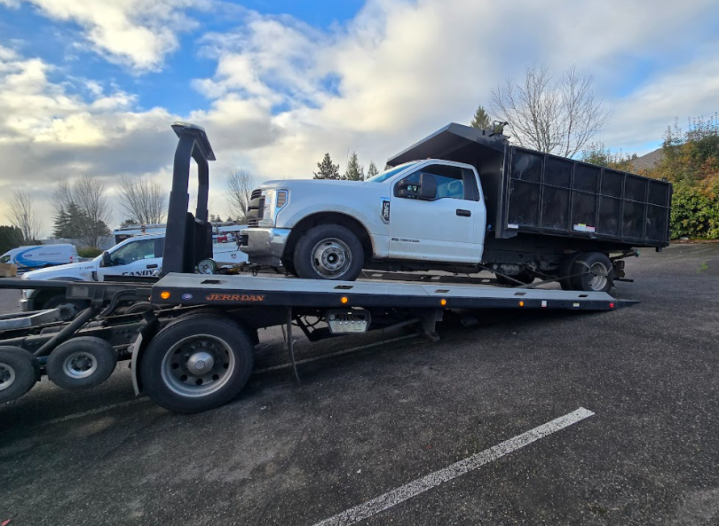

Emergency Towing
Fast towing across Portland and surrounding areas for breakdowns, non-starts, accidents, and vehicles that need to be moved safely.
Affordable Car Towing LLC provides fast and dependable Portland car towing and roadside assistance throughout Portland and nearby communities. If you need emergency towing, a jump start, lockout service, tire change, fuel delivery, or general roadside help, call now for quick local service.

If you're searching for a tow truck near you in Portland, Affordable Car Towing LLC provides fast local towing services across I-5, I-205, Highway 26, downtown Portland, and surrounding areas. Call now for quick dispatch and reliable service.
Quick local response when you need a tow truck in Portland or nearby areas.
Serving Portland and surrounding communities with dedicated city service pages.
Available day or night for towing and common roadside service needs.
From dead batteries and flat tires to lockouts and emergency towing, this section helps customers quickly understand what services you offer and when they should call.
Fast towing across Portland and surrounding areas for breakdowns, non-starts, accidents, and vehicles that need to be moved safely.
Locked your keys in the car? We help you get back in quickly without the stress of waiting around forever.
Dead battery at home, work, or on the roadside? We provide quick jump starts to help get you moving again.
If you have a flat and a usable spare, we can help swap it out and get you back on the road.
Ran out of gas? We deliver fuel so you can get back on your way without turning it into a full-day problem.
From common roadside problems to general vehicle help, we offer dependable local assistance when you need it most.
These pages help customers find the exact service they need and help Google understand what your business offers.

When you are stranded, locked out, or dealing with a vehicle that will not move, you want a local company that answers the phone and shows up. Affordable Car Towing LLC is built around fast local dispatch, clear communication, and dependable towing and roadside assistance in Portland.
Tow driver was an absolute gentleman, and extremely quick to pick me up and got me where I needed to be with no problems.
Google Review: DustinMy car completely stopped working on the side of the road and I needed to get the car towed. Victor came and picked up the car smoothly and quickly.
Google Review: LauraViktor helped me when I got into a car accident and needed to be towed. Very friendly and helpful throughout the whole situation.
Google Review: AleksReal photos from towing and roadside assistance jobs in Portland and surrounding areas.


Yes. We provide 24/7 towing and roadside assistance in Portland and surrounding areas.
Yes. We provide jump starts, lockout help, tire changes, fuel delivery, and general roadside assistance.
We serve Portland and nearby areas including Gresham, Clackamas, Milwaukie, Beaverton, Hillsboro, Troutdale, and Vancouver, WA.
Fast, affordable towing and roadside assistance available now. We service Portland, Vancouver, Gresham, Clackamas, Happy Valley and surrounding areas with quick response times, professional drivers, and upfront pricing. Call now and we will help get you back on the road.